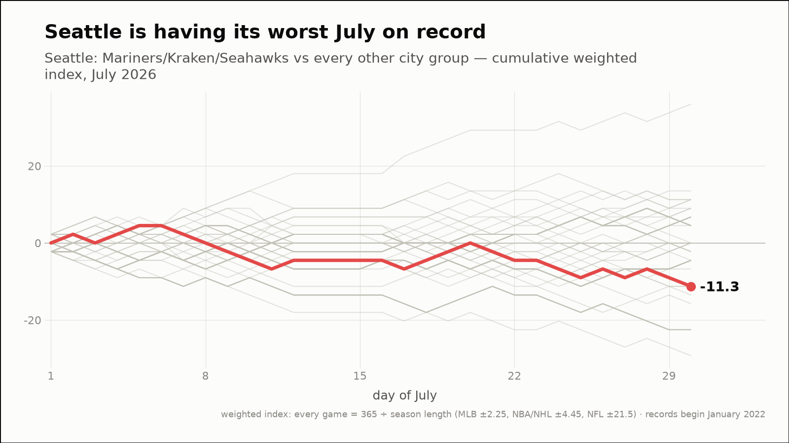
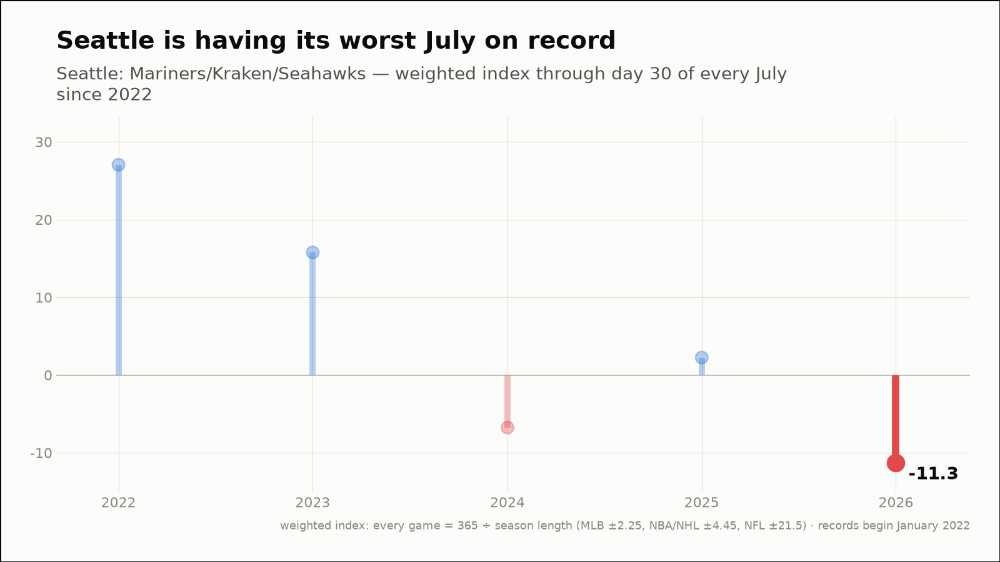
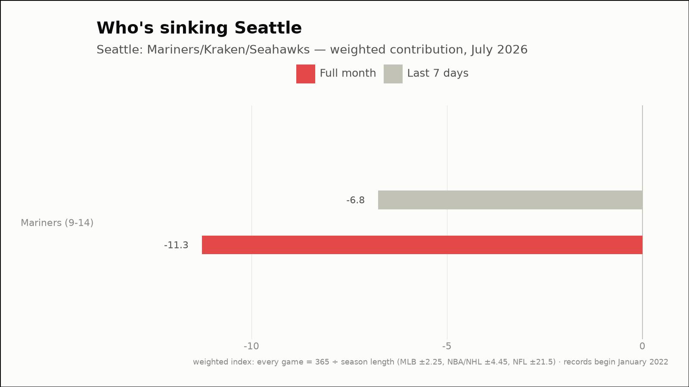
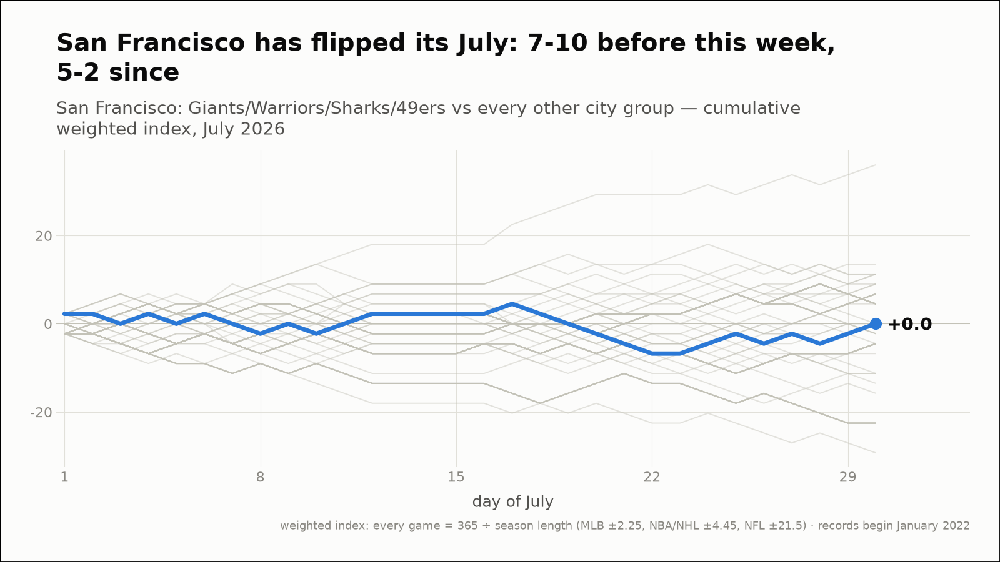
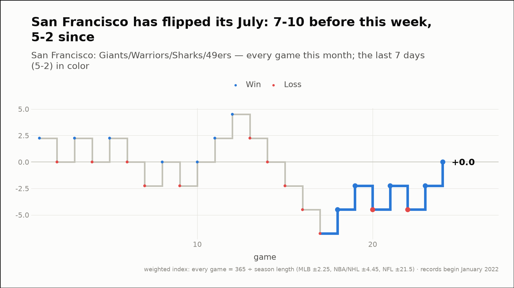
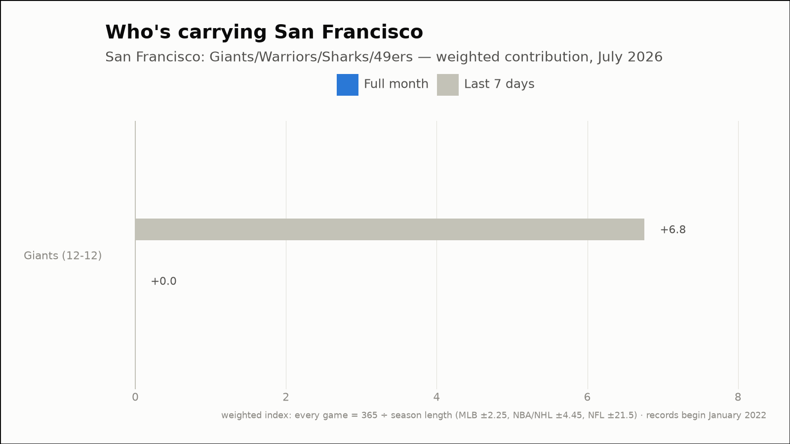
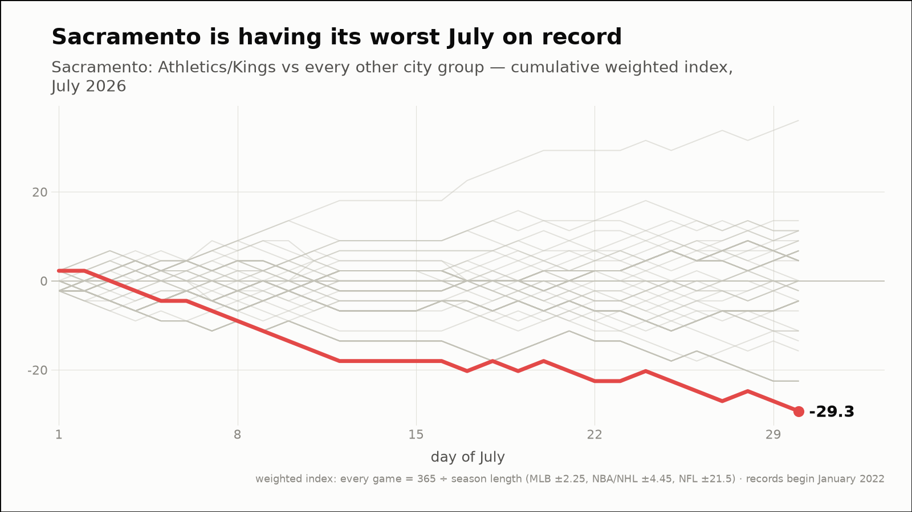
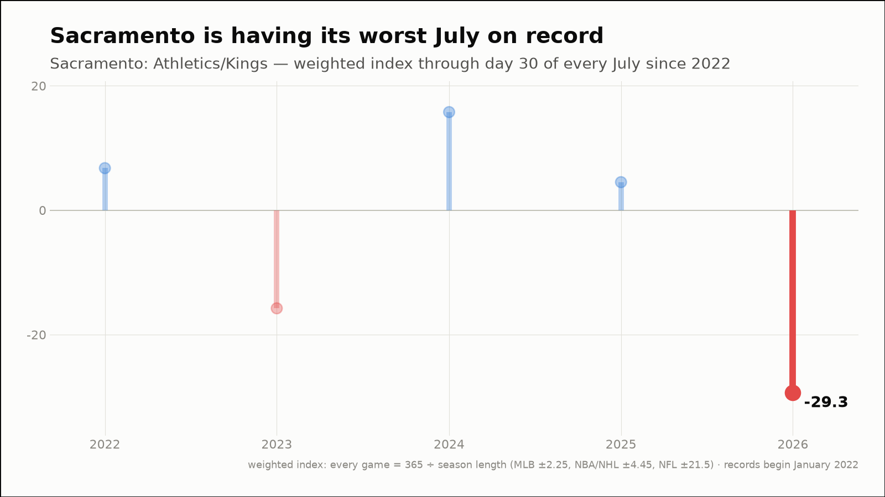
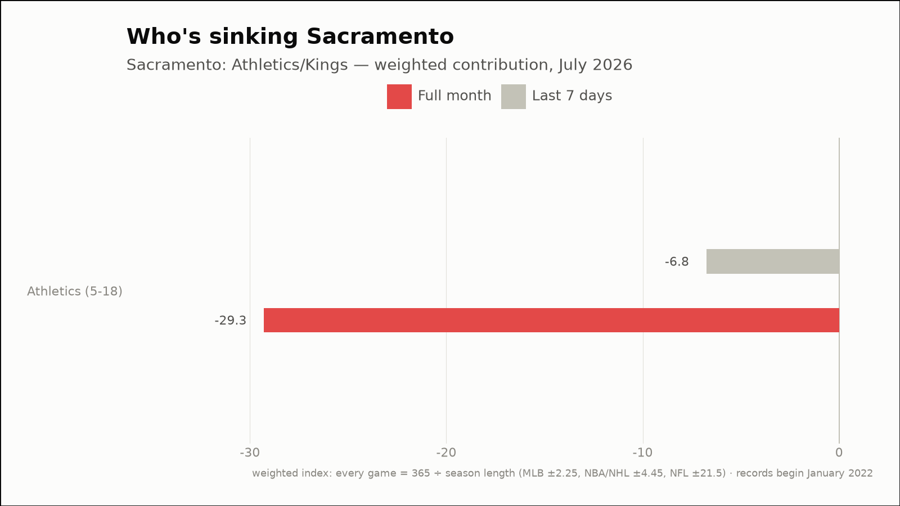

Out of the norm — three fandoms off their own script
The weekly hunt across all 88 city groups, through July 30, 2026
Seattle is having its worst July on record
Seattle: Mariners/Kraken/Seahawks
- This month (through July 30)
- 9-14, -11.3 weighted — 1st-worst July of the 5 since 2022
- vs all months
- 13th-worst of 55 months since 2022 (23rd percentile)
- Last 7 days
- 2-5, -6.8 weighted
- Driving it this week
- Mariners (2-5, -6.8)



San Francisco has flipped its July: 7-10 before this week, 5-2 since
San Francisco: Giants/Warriors/Sharks/49ers
- Before this week
- 7-10, -6.8 weighted (-0.40 per game)
- Since
- 5-2, +6.8 weighted (+0.97 per game)
- This month (through July 30)
- 12-12, +0.0 weighted
- Last 7 days
- 5-2, +6.8 weighted
- Driving it this week
- Giants (5-2, +6.8)



Sacramento is having its worst July on record
Sacramento: Athletics/Kings
- This month (through July 30)
- 5-18, -29.3 weighted — 1st-worst July of the 5 since 2022
- vs all months
- 9th-worst of 55 months since 2022 (17th percentile)
- Last 7 days
- 2-5, -6.8 weighted
- Driving it this week
- Athletics (2-5, -6.8)


